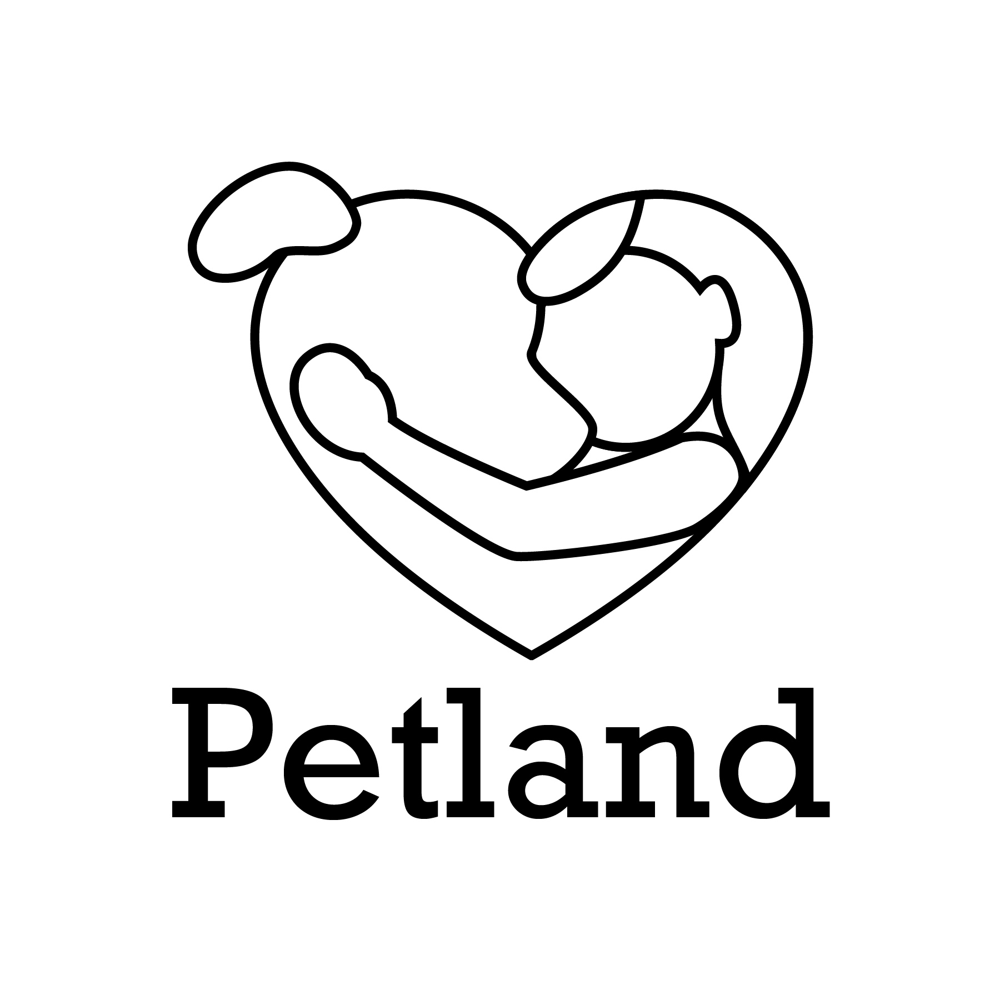
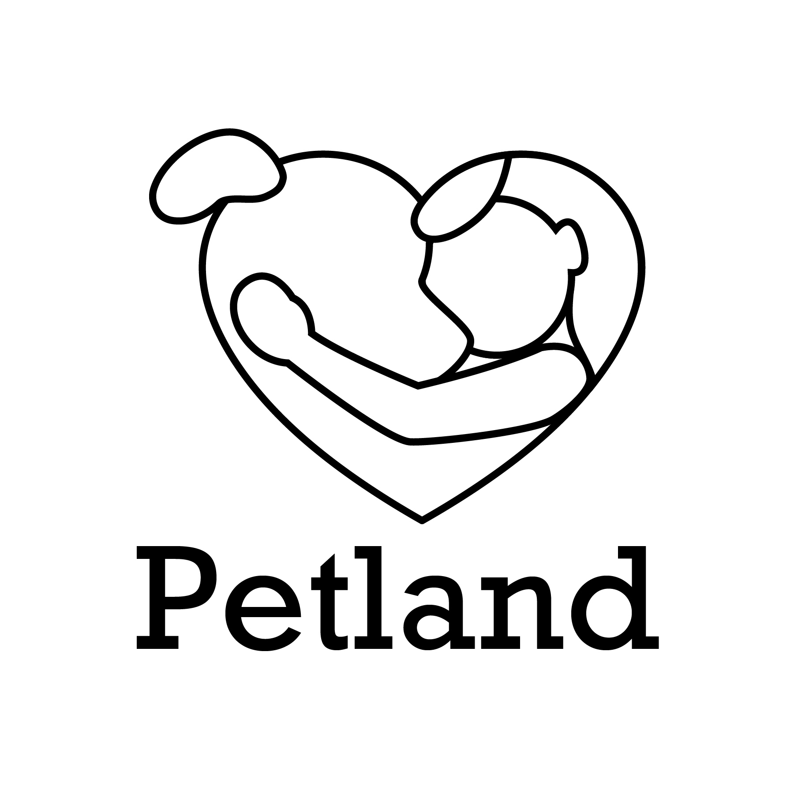
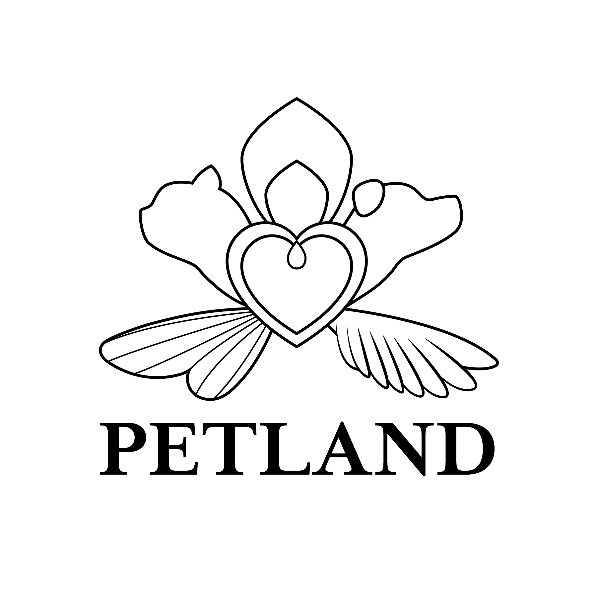
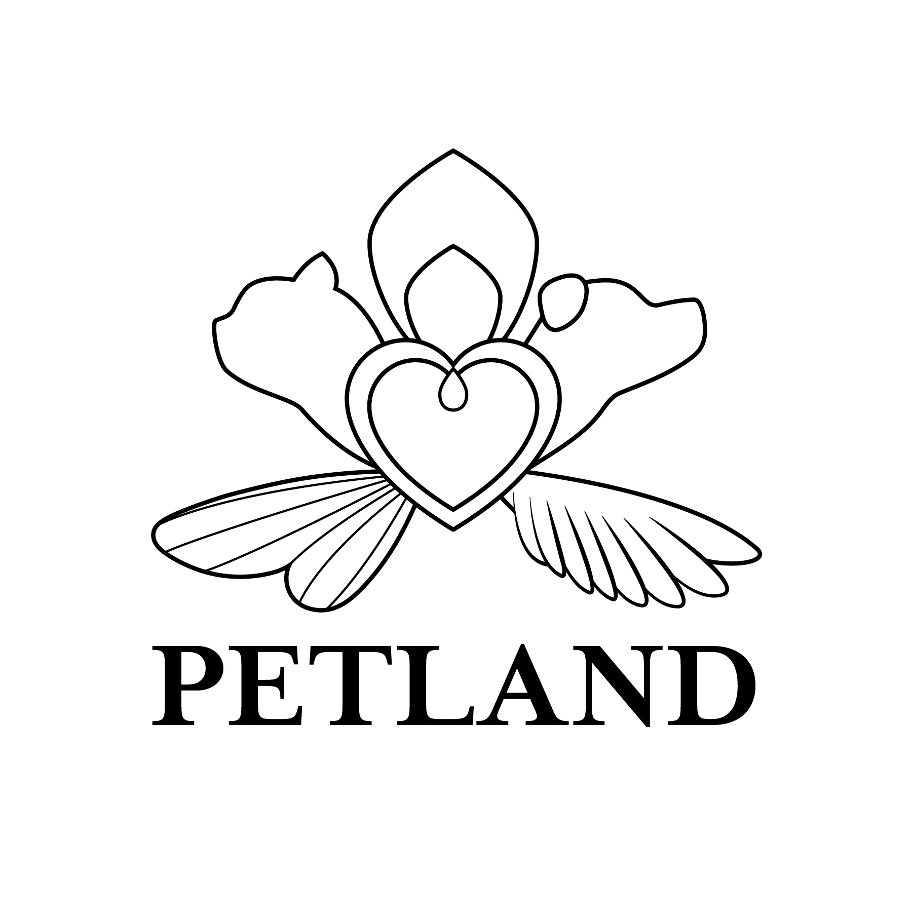

Petland Logo
Finding the right amount of cuteness and professionalism within a logo.
On this assignment, I was to choose a company logo and redesign it. I chose to redesign Kahala’s Petland logo. I sketched until I came up with three potential logo designs; one friendly look, one sophisticated, and one playful. I went with the playful style for my final design and chose a soft green color to express a calm and inviting touch. As for the design process, I included common pets in Hawaii; a dog, cat, cockatiel, and goldfish. It is also a logotype, in which I had to design with text. I then proceeded to use illustrator and chose a font that matched my sketch. After that I carefully created the shapes of the animals and placed them on top of the text.
Service: Logo Design
Software Adobe Illustrator
Skills: Sketching, Illustrating
 

 
